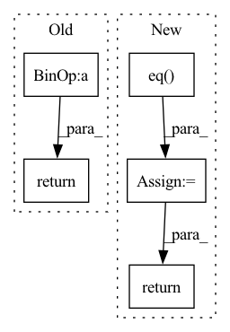

Pattern ID :37206

Before Change
positive_label_mask = targets == 1.0
cross_entropy = F.binary_cross_entropy_with_logits(logits, targets.to(logits.dtype), reduction="none")
neg_logits = -1.0 * logits
modulator = torch.exp(gamma * targets * neg_logits - gamma * torch.log1p(torch.exp(neg_logits)))
loss = modulator * cross_entropy
weighted_loss = torch.where(positive_label_mask, alpha * loss, (1.0 - alpha) * loss)
weighted_loss /= normalizer
return weighted_loss
class ExponentialMovingAverage:
After Change
alpha_factor = torch.where(
torch.eq(targets, 1.), alpha_factor, 1. - alpha_factor)
focal_weight = torch.where(
torch.eq(targets, 1.), 1. - outputs, outputs)
focal_weight = alpha_factor * torch.pow(focal_weight, gamma)
bce = -(targets * torch.log(outputs)
+ (1.0 - targets) * torch.log(1.0 - outputs))
loss = focal_weight * bce
loss = torch.where(torch.ne(targets, -1.0), loss,
torch.zeros(loss.shape, device=device))
loss /= normalizer
return loss
class ExponentialMovingAverage:
In pattern: SUPERPATTERN
Frequency: 3
Non-data size: 5
Instances
Fragment ID: 107230628
Project Name: sevakon/efficientdet
Commit Name: cc2e5246bcb32e8fd405e64eec12b70088f1f097
Time: 2020-05-25
Author: sevakonyakhin@gmail.com
File Name: utils/tools.py
M Class Name: AnonimousClass
N Class Name: AnonimousClass
M Method Name: focal_loss(5)
N Method Name: focal_loss(5)
M Parent Class:
N Parent Class:
M File Name: utils/tools.py
N File Name: utils/tools.py
M Start Line: 80
M End Line: 87
N Start Line: 74
N End Line: 91
'>
Before Change
return ~make_pad_mask(lengths, xs, length_dim)
def get_attn_pad_mask(lengths, xs=None, length_dim=-1):
return ~make_pad_mask(lengths, xs, length_dim).unsqueeze(-2).lt(1)
def subsequent_mask(size, device="cpu", dtype=torch.bool):
ret = torch.ones(size, size, device=device, dtype=dtype)
return torch.tril(ret, out=ret).lt(1)
After Change
def get_attn_pad_mask(lengths, xs=None, length_dim=-1):
mask = ~make_pad_mask(lengths, length_dim)
//mask = mask.expand(-1, xs, -1)
mask = mask.unsqueeze(1).eq(0)
return mask
def subsequent_mask(size, device="cpu", dtype=torch.bool):
ret = torch.ones(size, size, device=device, dtype=dtype)
'>
Fragment ID: 107230647
Project Name: qute012/kosr
Commit Name: e19438c9d4d6bd6af0fa84e9fd93a20e2cf2f828
Time: 2021-02-03
Author: ejrwls012@gmail.com
File Name: kosr/model/mask.py
M Class Name: AnonimousClass
N Class Name: AnonimousClass
M Method Name: get_attn_pad_mask(3)
N Method Name: get_attn_pad_mask(3)
M Parent Class:
N Parent Class:
M File Name: kosr/model/mask.py
N File Name: kosr/model/mask.py
M Start Line: 36
M End Line: 36
N Start Line: 24
N End Line: 27
'>
Before Change
out = body_ctx(ctx, src)
if ctx.is_initializing:
return out
return cross_entropy_loss(ctx, out, tgt)
After Change
def mean(x: jnp.ndarray) -> jnp.ndarray:
return (x.astype(jnp.float32) / tgt.size).sum()
loss = mean(jax.nn.logsumexp(out, -1)) - mean(jnp.take_along_axis(out, tgt.reshape(-1, 1), -1))
acc = mean(lax.eq(out.argmax(-1), tgt.reshape(-1)))
return loss, acc
'>
Fragment ID: 107230680
Project Name: homebrewnlp/homebrewnlp-jax
Commit Name: 19f3998f0f05ef22a6c83c84082897e217f9d75a
Time: 2022-08-21
Author: 39779310+ClashLuke@users.noreply.github.com
File Name: src/model/main.py
M Class Name: AnonimousClass
N Class Name: AnonimousClass
M Method Name: compute(2)
N Method Name: compute(2)
M Parent Class:
N Parent Class:
M File Name: src/model/main.py
N File Name: src/model/main.py
M Start Line: 48
M End Line: 54
N Start Line: 48
N End Line: 64